PRO-
движение
движение
Сбросить лишний вес – прекрасное решение, ведущее к улучшению состояния здоровья, настроения и самооценки. Но путь, который вы выберете, должен быть правильным, иначе проблем вы получите больше, чем позитивных изменений. Главный вопрос в похудении всегда «как»: как похудеть? как быстро уйдет вес? как найти мотивацию? как уменьшить побочные эффекты резкого сброса веса? как выбрать диету? Практически на любой из них можно ответить просто: ищите свой вариант. Примите решение и следуйте ему не менее месяца, чтобы получить результат или понять, что данный способ вам не подходит. За более короткий срок изменения могут быть не заметны, организму нужно время, чтобы перестроиться.
Записавшись в тренажерный зал, у многих новичков возникает вопрос о том, нужно ли спортивное питание и каким оно должно быть. Ответ будет зависеть от поставленных целей, так как само понятие подразумевает:
Ох уж это страшное слово «калории». Их все считают-считают, под что-то подгоняют, куда-то тратят. Если отложить шутки в сторону, то тема соблюдения калорийности рациона очень актуальна, особенно в последнее время. Развитие технологий, в том числе и пищевых, привело к тому, что стало больше рафинированной продукции, сложного по составу сырья, высококалорийного питания. Это приводит к увеличению фактически потребляемой энергии и как следствие – к излишнему весу. Но только ли в невоздержанности проблема? Итак, давайте учиться считать калорийность готовых продуктов питания.
Навязчивая реклама вредных продуктов питания, которая мелькает со всех экранов, сделала свое дело – правильный образ жизни перестал быть привлекательным, насыщение желудка превратилось в самоцель, заставив человека подсесть на яркие вкусы и быстрые углеводы. Но мы не станем потакать масс-медиа! Мы продолжим стоять на страже здоровых привычек, которые необходимы телу, чтобы восстановить естественную жизнедеятельность всех органов и систем. Как укрепить здоровье и омолодиться?
Красивому рельефу мышц предшествует набор сухой мышечной массы за счет правильного питания и интенсивных тренировок. Если вы хотите заняться телом самостоятельно, не прибегая к услугам диетологов и тренеров, то следует выделить для себя две основные задачи:
Помните, что при наличии избыточного веса вам не удастся набрать сухую массу. Прежде всего, мы рекомендуем похудеть, и для этих целей разработали такие варианты меню, как «Fit» или «Vega». В них мало калорий, но много питательных веществ, витаминов, минералов. С таким рационом вы быстро приведете себя в порядок и сможете приступить к набору качественной массы в виде упругих красивых мышц.
Лето – время, когда стоит пересмотреть свой рацион, чтобы в разгар дня чувствовать себя бодрым, полным сил и энергии. К тому же вам с легкостью удастся похудеть на несколько килограммов, ведь главный принцип питания в летнюю жару заключается в снижении суточной калорийности и переходе на низкоуглеводное меню. Существуют и другие нюансы приемов пищи, которые позволят легче переносить жаркую погоду. Следуя всем рекомендациям, вы будете меньше уставать, у вас улучшится самочувствие и повысится активность. Бонус ко всему – стройная фигура!